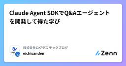
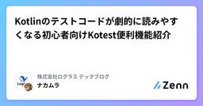
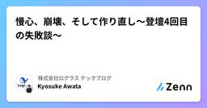
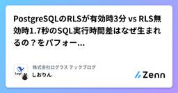
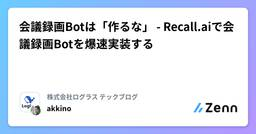
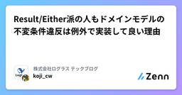
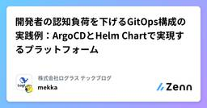
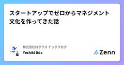
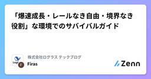
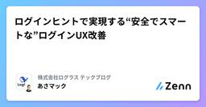

株式会社ログラス テックブログのフィード
https://zenn.dev/p/loglass
株式会社ログラスは「良い景気を作ろう。」をミッションに、企業経営を推進する次世代型経営管理クラウド「Loglass 経営管理」を開発し提供しています。
フィード

Claude Agent SDKでQ&Aエージェントを開発して得た学び
株式会社ログラス テックブログのフィード
!この記事は 株式会社ログラス Productチーム Advent Calendar 2025 のシリーズ 1、13日目 の記事です。エンジニアの三田(@Eichisanden)です。今年取り組んだ、プロダクトの仕様を答える社内向けQ&Aエージェント開発で得た学びを記事にしたいと思います。 はじめに「この機能の仕様ってどうなってましたっけ？」「このデータ、どういう条件で作成されますか？」開発チームには日々、こうした仕様に関する問い合わせがきます。ドキュメントがあっても探しきれなかったり、最新の実装と乖離していたりして、エンジニアがコードを読んで答えることも多い...
15時間前

Kotlinのテストコードが劇的に読みやすくなる初心者向けKotest便利機能紹介
株式会社ログラス テックブログのフィード
!この記事は 株式会社ログラス Productチーム Advent Calendar 2025 のシリーズ 2、12日目 の記事です。Kotestは、単に「Kotlinで書ける」という理由だけで選ばれているのではありません。それは、JUnit5と比べて表現力、読みやすさ、そして何よりテストの安定性を劇的に高めるための、強力な仕掛けがいくつも詰め込まれているからです。テストコードは、一度書いて終わりではありません。それは、機能の「動く仕様書」として、未来の自分やチームメンバーが最も頻繁に読むコードの一つです。それなのに、JUnit5スタイルで書かれたテストは、しばしば次のような課...
2日前

慢心、崩壊、そして作り直し〜登壇4回目の失敗談〜
株式会社ログラス テックブログのフィード
!この記事は 株式会社ログラス Productチーム Advent Calendar 2025 のシリーズ 1、12日目 の記事です。 「これはちょっと...」Slackの通知音が鳴った。レビューをお願いしていた登壇資料へのフィードバックだ。画面を開いた瞬間、胃のあたりがキュッと締まるのを感じた。「思想が強すぎて、裏付けとなる体験やエビデンスがない」「話が飛び飛びで繋がりが薄い」「言いたいことを詰め込みすぎている」自信作だったはずの資料が、目の前で崩れていく。4回目の登壇だった。「もう自分でやれる」と思っていた。1〜3回目はうまくいっていたから。でも、それが慢心だ...
2日前

PostgreSQLのRLSが有効時3分 vs RLS無効時1.7秒のSQL実行時間差はなぜ生まれるの？をパフォーマンス改善内部探訪編 1
1
株式会社ログラス テックブログのフィード
!この記事は毎週必ず記事がでるテックブログ Loglass Tech Blog Sprint の121週目の記事です！3年間連続達成まで残り38週となりました！クリスマスが近いですね。自分の身長より大きいクリスマスツリーを買って満足したしおりん（@jamgodtree）です。 生成AIによりパフォーマンスチューニングが簡単になった世界 前提: ログラスのRLS運用ログラスでは、PostgreSQLのRLS（Row Level Security）機能を利用し、マルチテナント間での情報漏洩リスクを防ぐ仕組みを導入しています。アプリケーションでのRLSの実装方法については、...
4日前

会議録画Botは「作るな」 - Recall.aiで会議録画Botを爆速実装する
株式会社ログラス テックブログのフィード
!この記事は 株式会社ログラス Productチーム Advent Calendar 2025 のシリーズ 1、10日目 の記事です。 はじめに：会議録画Bot、自前で作ろうとしてませんか？「ZoomやGoogle Meetの会議を自動で録画して、文字起こしや要約を行いたい」昨今のAIブームも相まって、このような要件は開発現場で増えています。そして多くの場合、最初に突き当たるのが、ビデオ会議プラットフォームごとのAPI仕様の壁です。かくいう自分も「ZoomのAPIを叩いてBotを入室させればいいだけでしょ？」と当初は軽く考えていましたが、いざ設計を考えてみるとその道が...
4日前

Result/Either派の人もドメインモデルの不変条件違反は例外で実装して良い理由
株式会社ログラス テックブログのフィード
!株式会社ログラス Productチーム Advent Calendar 2025のシリーズ 1 9日目の記事です。この記事では、ドメインモデルを実装するときに頻出する不変条件の設計を、単体テストの考え方/使い方の著者Vladimir Khorikovさんの記事を紹介しつつ説明していきたいと思います。 背景DDDの書籍やサンプルコードを読むと、以下のようにコンストラクタで不変条件チェックするコードがよく登場します。data class Range(val from: LocalDate, val to: LocalDate) { init { //...
4日前

開発者の認知負荷を下げるGitOps構成の実践例：ArgoCDとHelm Chartで実現するプラットフォーム 1
株式会社ログラス テックブログのフィード
!この記事は 株式会社ログラス Productチーム Advent Calendar 2025 のシリーズ 2、9日目 の記事です。 はじめにこんにちはログラスでSREをしている見形@mekkaです。ログラスではマルチプロダクト展開を見据えたプラットフォームの整備を進めています。具体的な取り組みとしては、これまでプロダクトごとにECSで管理していたインフラを、EKSを利用した横断的なプラットフォームへ統合しようと考えています。Kubernetesのエコシステムを活用し、より柔軟な抽象化を提供することが目的です。プラットフォームエンジニアリングの話をすると議論する部分は沢...
5日前

スタートアップでゼロからマネジメント文化を作ってきた話 2
株式会社ログラス テックブログのフィード
!この記事は 株式会社ログラス Productチーム Advent Calendar 2025 のシリーズ 1、8日目 の記事です。ログラスの飯田です。この記事では、EMConf 2026のプロポーザルに出した内容の補強として具体的な話をお伝えできればと思います。プロポーザルは以下。https://fortee.jp/emconf-2026/proposal/baa700b7-2e90-47b9-8925-f9c8c72d8d20 背景このプロポーザルではスタートアップの中で組織が拡大していく中で私自身が一人目のマネージャーとして経験してきたことをN=1の事例としてお...
5日前

「爆速成長・レールなき自由・境界なき役割」な環境でのサバイバルガイド
株式会社ログラス テックブログのフィード
!この記事は 株式会社ログラス Productチーム Advent Calendar 2025 のシリーズ2、7日目の記事です。現在、AI-Opsエンジニアとしてインターンをしており、来春から新卒として正式に入社予定の筆者である。本記事では、事業が爆速で拡大する環境に身を置き、実務の中で叩き込まれた「生存戦略」を等身大の視点でまとめた。 「優しさ」に甘えないで。急成長する現場のリアルまず前提として、ログラスのメンバーはめっちゃ優しい。ただ、現実は事業が爆速で拡大しているフェーズで、みんな高い目標を追っている。ここが大事なポイントなんだけど、人がいくら優しくても、みんなそれ...
7日前

ログインヒントで実現する“安全でスマートな”ログインUX改善
株式会社ログラス テックブログのフィード
!この記事は 株式会社ログラス Productチーム Advent Calendar 2025 のシリーズ 1、7日目 の記事です。こんにちは、ログラスでフロントエンドエンジニアをしております、浅井 (@mixplace) です。今回は、シングルサインオン認証時におけるアプリケーションのログイン体験を改善できる、ログインヒント login_hint のお話をしたいと思います。 はじめにSaaSやWebアプリケーションを開発している中で、ユーザーから次のようなご相談をいただくことはないでしょうか。「毎回ログイン画面でメールアドレスを入力するのが面倒なのです。」「社内ポ...
7日前

パーサを書いて Parquet の Repetition Level と Definition Level を理解する
株式会社ログラス テックブログのフィード
!この記事は 株式会社ログラス Productチーム Advent Calendar 2025 のシリーズ 2、6日目 の記事です。Parquet、使っていますか？速くて、ファイルサイズが小さくて、複雑なデータ構造でもいい感じに扱ってくれてすごいですよね。すごいなーで終わらせてしまうのはもったいないので、どういった仕組みでそれを実現しているのか理解したくなりました。Parquet のファイルフォーマットの全体像については Parquetフォーマット概観 の記事が非常に分かりやすいのでぜひ参照いただきたいのですが、 Repetition Level と Definition ...
8日前

なぜ "簡単" なコードが複雑になるのか 〜 AI時代に読み直す『Simple Made Easy』 50
株式会社ログラス テックブログのフィード
!株式会社ログラス プロダクトチーム Advent Calendar 2025 のシリーズ 1、6日目の記事です。14年前の講演が、いま必要になる理由。生成AIがコードを量産できてしまう2025年、圧倒されてしまっていないでしょうか。コードレビューや品質確保に追われているかもしれません。この"複雑性の増大"に対して鋭い洞察を与えるのが、Rich Hickey（リッチ・ヒッキー）による Simple Made Easy (2011) です。ソフトウェア設計の本質を突く名講演でありながら、最近はあまり話題に登らないようです。この記事では、原義に沿って Simple Made Ea...
8日前

Result型とsealed interfaceで型安全なエラーハンドリングを実現する
株式会社ログラス テックブログのフィード
!この記事は毎週必ず記事がでるテックブログ Loglass Tech Blog Sprint の120週目の記事です！3年間連続達成まで残り39週となりました！こんにちは、今年の4月に新卒でログラスにエンジニアとして入社したDavidです。今回は、Kotlinのエラーハンドリングをより安全に扱うために学んだことを、簡単に共有したいと思います！ はじめにKotlinでエラー処理を書くとき、こんなコードを書いていませんか？fun createUser(email: String, password: String): User { if (email.isBlank...
8日前
VimConf 2025 SmallのLT振り返りと補足
株式会社ログラス テックブログのフィード
!この記事は 株式会社ログラス Productチーム Advent Calendar 2025 のシリーズ 1、5日目 の記事です。 始めに2025年11月2日に VimConf 2025 Small が開催されていました。https://vimconf.org/2025/ja/私は2023年から連続で参加しており、毎年楽しみにしているイベントです。その2023年には懇親会の中で突発的にLTをするということもありましたが、公式の記録に残ることのない登壇でした。今年はTried writing it vim9scriptというタイトルでLTのプロポーザルを出して、無...
9日前
「Planningが長い」謎を解く。Icebergで学ぶ、メタデータという"データ"のコスト
株式会社ログラス テックブログのフィード
!この記事は 株式会社ログラス Productチーム Advent Calendar 2025 のシリーズ 2、4日目 の記事です。ログラスの龍島(@hryushm)です。氷のように寒い日々ですね。今日はIcebergの話です。 はじめに「SQLのIN句に大量のIDを指定するとクエリが遅くなる」。 これはRDBMSの世界ではよく知られた話です。一般的にその理由は、オプティマイザが複雑なOR条件の展開に苦戦するためであったり、巨大なSQL文自体のパース負荷の問題として説明されます。私自身も、BigQueryやSnowflakeといったモダンなクラウドDWHで同様の現象（大...
10日前
プロジェクト計画をAIがレビューしたら、「重大なリスクと見落とし」を指摘してくれた
株式会社ログラス テックブログのフィード
!この記事は 株式会社ログラス Productチーム Advent Calendar 2025 のシリーズ 1、4日目 の記事です。こんにちは、ログラスの松岡(@little_hand_s)です 3行まとめAIをコード生成や文章校正に使ってますか？実はプロジェクト計画のレビューにも使えます見落としやリスクを指摘してくれて、叩き台でスムーズに改善案を考えられます小さく始めて、徐々に精度を上げていくことができます AIの意外な使い道：プロジェクト計画のレビュー最近は、コード生成や文章の校正にAIを使う人が増えています。でも、「プロジェクト計画のレビュー」には...
10日前
プロダクト開発における「両立」のジレンマをどう乗り越えるか 〜 アーキテクチャConference 2025 で集まった98の葛藤と挑戦 〜
株式会社ログラス テックブログのフィード
こんにちは、株式会社ログラス プロダクト基盤部の小林です。この記事は、先日開催された「アーキテクチャConference 2025」におけるログラスブースの企画報告です。ブースにお立ち寄りいただいた皆様、セッションにご参加いただいた皆様に、改めて御礼申し上げます（ブース運営の皆さんもお疲れ様でした）。本稿では、ブースで実施した企画の結果と、そこから浮かび上がった現代のエンジニアが直面する共通の課題について整理してみます。 ボードを埋め尽くした「98の葛藤」今回のブースでは、開発現場が抱えるリアルな課題を共有する場を設けたいと考え、次のようなボードを用意しました。「プロダクト開発...
10日前
GlueでRedshiftからPostgresへデータを日次で差分更新する話
株式会社ログラス テックブログのフィード
!この記事は 株式会社ログラス Productチーム Advent Calendar 2025 のシリーズ 1、3日目 の記事です。 はじめにデータアナリティクスチームのre:Inventの朝で寝不足なゲインです。今回はデータアナリティクスに入る前にやっていた仕事の話をします。 やりたいこと外部からRedshift経由で共有されている数億レコードあるようなデータをPostgreSQLに連携したいという要件です。一覧画面でインクリメンタルサーチで絞り込んだ結果だけを表示したいその画面ではユーザー入力によるデータと外部提供のデータをJOINして表示したい更新頻度は...
11日前
マルチプロダクトを支える、gRPCとポリレポにおけるprotoファイル一元管理の戦略
株式会社ログラス テックブログのフィード
!この記事は 株式会社ログラス Productチーム Advent Calendar 2025 のシリーズ 2、3日目 の記事です。 はじめにこんにちは、ログラスでエンジニアをしております、田中です（@kakke18_perry）。ログラスはマルチプロダクト戦略を掲げており、その実現に向けた共通基盤の構築を推進しています。https://note.com/loglass_post/n/nba2b49ea7da5この戦略の実現を見据えて、以下の2つの技術的な決定をしました。サービス間通信にはgRPCを利用するprotoファイルと自動生成ファイルは共通リポジトリ（以後...
11日前
外部システムとのSSO連携の「失敗する原因」を潰すための完全ガイド
株式会社ログラス テックブログのフィード
!この記事は 株式会社ログラス Productチーム Advent Calendar 2025 のシリーズ 2、2日目 の記事です。 概要本記事ではシステム間のSSO連携に関わる、もしくは興味があるエンジニアに向けて、運用を見据えた設計を行うためにはどうすればいいか？を解説します。SSO（Single Sign On）連携とは、社内の認証基盤（IdP）とサービスをつなぎ、一度のログインで共通アカウントから複数システムを利用できるようにする仕組みです。自社システムと外部システムとのSSO連携は、ユーザ体験の改善やセキュリティの観点から多くのシステムで実施されています。これらの連...
12日前